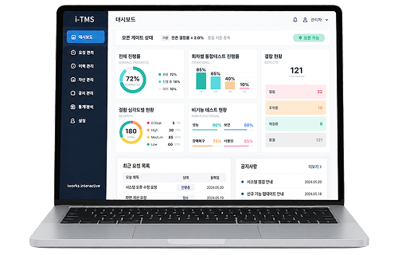
i-TMS
단위·통합테스트를 표준화하고,
오픈 품질을 통제하는 운영 게이트 플랫폼
단위테스트와 통합테스트를 단순 수행하는 도구를 넘어,
프로젝트 규모가 커질수록 흔들리기 쉬운 테스트 표준 체계를 일관되게 유지하고,
오픈(릴리즈) 시점에 품질을 확인·통제하는 운영 게이트(Release Gate) 역할을 수행하는 테스트 관리 플랫폼입니다.
테스트 관리 플랫폼 i-TMS
테스트는 “하면 좋은 활동”이 아니라, 시스템 운영 품질과 서비스 신뢰를 좌우하는 필수 절차입니다. 특히 통합 환경에서는 기능 간 연결, 데이터 흐름, 외부 연계, 성능/보안/장애 대응 같은 비기능 요소까지 얽히면서 “테스트가 됐는지”를 말로 설명하기 어렵습니다.
Test Insight는 테스트의 결과와 근거(증적)를 체계로 남겨, 오픈 가능 여부를 객관적으로 판단할 수 있게 합니다.
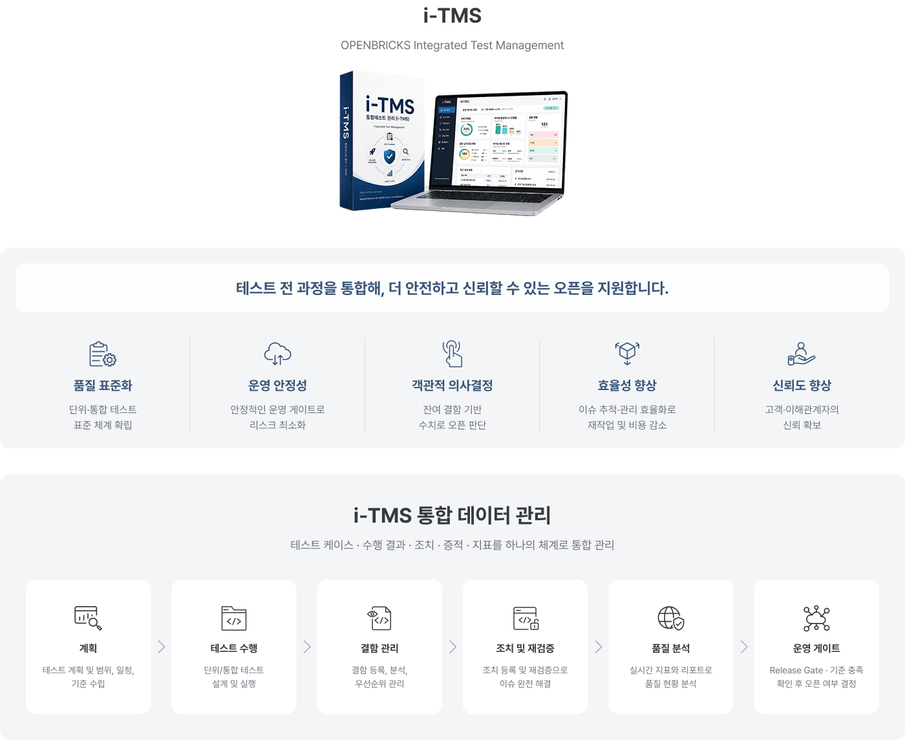
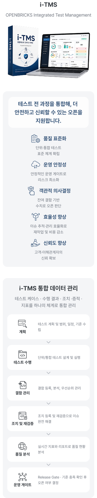
Why i-TMS
왜 i-TMS가 필요할까요?
테스트는 시스템 운영 품질과 서비스 신뢰를 좌우합니다.
체계가 없으면 누락과 지연, 운영 리스크가 오픈 후 비용으로 돌아옵니다.
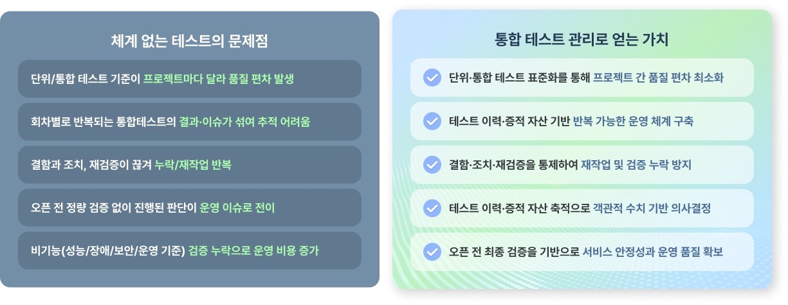
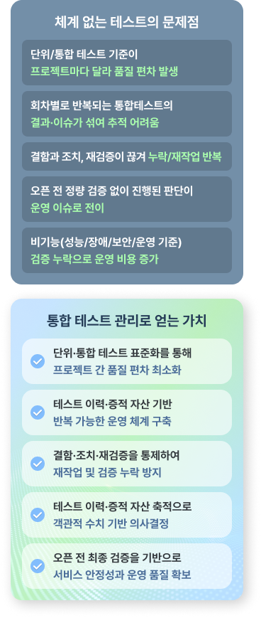
테스트는 시스템 운영 품질과 서비스 신뢰를 좌우합니다.
i-TMS는 테스트를 반복 가능한 운영 체계로 만들고,
오픈 품질을 객관적으로 통제합니다.
i-TMS 표준 운영 프로세스
OPENBRICKS는 고객 환경과 일정에 맞춰 실행 가능한 범위로 다음을 수행합니다.
-
Step 01
계획
테스트 플랜 수립 범위/기준 설정 참여자 등록
-
Step 02
회차 설정
통합테스트 회차 생성 수행 범위/일정 정의 참여자 배정
-
Step 03
수행
단위/통합 테스트 수행 결과 및 증적 등록 진행률 관리
-
Step 04
결함/조치
결함 등록/분류 조치 등록 및 처리 원인 분석 및 패치
-
Step 05
재검증
조치 결과 재검증 상태 업데이트 종결 처리
-
Step 06
오픈 게이트
조치 기준 충족 확인 Go / No-Go 결정 결정 및 기록
i-TMS Feature
i-TMS가 제공하는 핵심 기능
유지보수 관리 플랫폼은 아래 운영 체계 요소를 제품 구조로 제공합니다. (기능 나열이 아니라 체계 구성요소 관점)
-
Feature 01
테스트 케이스 관리
테스트 케이스 등록/분류/버전 관리 단위/통합 구분 운영(업무/화면/연계/비기능 등 분류 가능) 스토리지/네트워크 구성 -
Feature 02
단위테스트 관리
단위테스트 계획/수행/결과 기록 결과와 증적(스크린샷/로그/첨부) 축적 -
Feature 03
회차별 통합테스트 설정 및 수행 관리
통합테스트를 1차/2차/3차… 회차로 구분 운영 회차별 수행 범위/참여자/진행률/결과를 분리 관리 이전 회차의 이슈/조치/결과가 섞이지 않게 추적 가능 -
Feature 04
결함 등록 · 조치 등록 · 재검증 루프
결함 등록(심각도/우선순위/재현 절차/첨부) 조치 등록(원인/해결/패치 정보) 재검증/종결 흐름 관리로 “했다/안 했다” 논쟁 감소 -
Feature 05
오픈 품질 게이트(Release Gate)
잔존 결함 현황과 테스트 결과를 집계 오픈 가능 여부 판단 기준 화면 제공 오픈 판단 근거(결정 기록) 보관 -
Feature 06
대시보드/리포트(의사결정)
단위/통합/회차별 진행률 결함 현황(열림/조치중/재검증/종결) 오픈 게이트 상태(준비/주의/불가 등) 회차별 비교(품질 추이)
i-TMS 도입 효과
객관적 수치 기반의 오픈 여부를 판단하는 i-TMS가 제공하는 핵심 대시보드 지표 예시입니다.
-
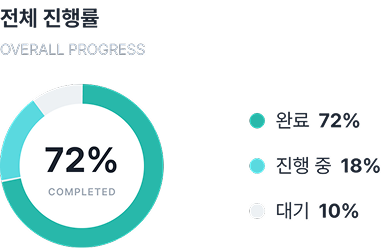
-
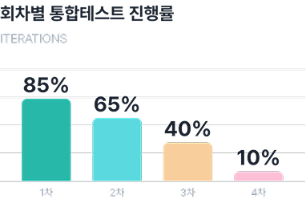
-
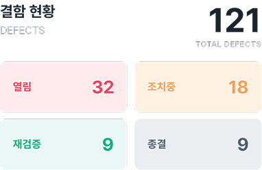
-
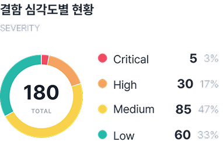
-
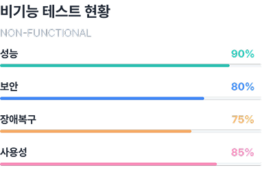
-
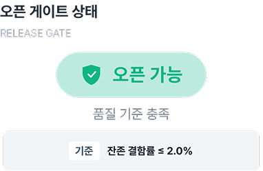
i-TMS 도입 효과
테스트 케이스부터 수행 결과, 조치, 증적, 지표까지 하나의 체계로 통합 관리합니다.

i-TMS는 테스트를 “한 번 잘하는 도구”가 아니라,
테스트를 반복 가능한 운영 체계로 만드는 도구입니다.
-
01
테스트가 프로젝트마다 흔들리지 않고 표준 체계로 고정
-
02
회차별 통합테스트가 분리 관리되어 추적성/통제력 강화
-
03
결함–조치–재검증이 연결되어 누락과 재작업 감소
-
04
오픈 품질이 객관화되어 운영 리스크 감소
-
05
테스트 결과와 근거가 자산화되어 다음 프로젝트/운영에도 재사용 가능
Beyond Systems,
We Connect Business
오픈브릭스는 AX 기반 시스템 통합으로
시스템을 넘어, 비즈니스를 연결합니다.